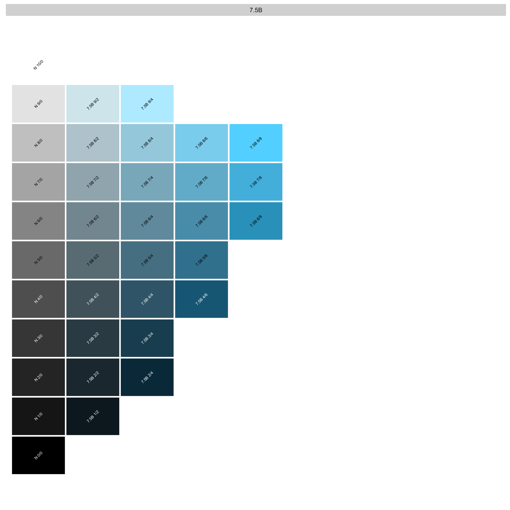
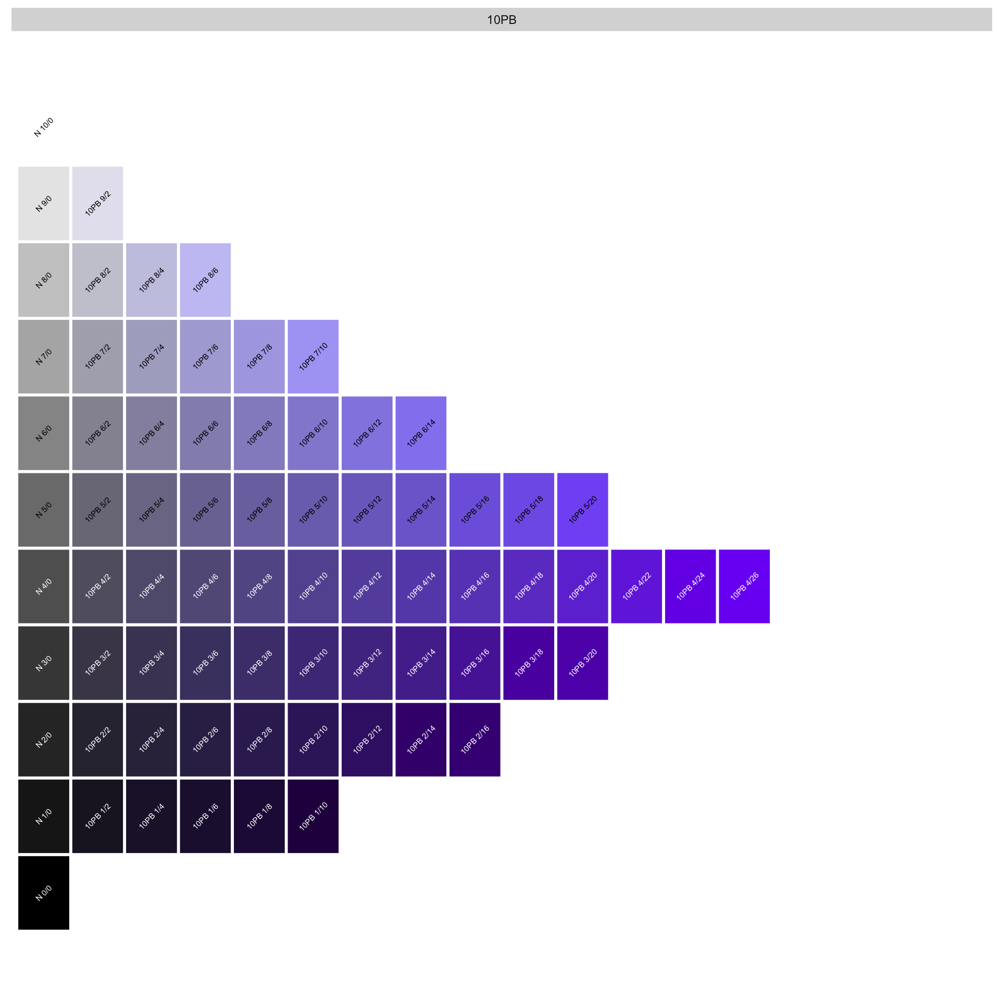

Code
#------------------------------------------------------------r20250226064947
# install.packages("munsell")
library(munsell)2025-02-24 耽搁了太多，还是继续更新测试
在研究ggplot2的layer时看到了一个新的的颜色系统关于颜色，我可以说真的是一个色盲吗？关 于颜色的基本概念其实是毫无兴趣去了解，但是当看到这里的时候却想去真正的理解，这三个概念到底所表达的是什么意思？大 概这就是缘分吧。
手册链接; cran url; Github URL url
Warning: Removed 25 rows containing missing values or values outside the scale range
(`geom_text()`).
Warning: Removed 33 rows containing missing values or values outside the scale range
(`geom_text()`).
孟塞尔颜色系统（Munsell Color System）通过三个维度精确描述颜色：色相（Hue）、明度（Value）、色度（Chroma）。以 颜色代码 5PB 5/10 为例，以下是其含义和如何用它描述你需要的颜色：
5PB 5/10 的含义5PB字母部分：PB 是 Purplish Blue（带紫色的蓝） 的缩写，表示色相环上的主色调。孟 塞尔系统将色相分为 10 种基础色，例如：
数字部分：5 表示在 PB 色相区间内的细分位置，范围是 0 到 10。例 如：
0PB 接近相邻色相（如 B 或 P），而 10PB 会与下一个色相（如 P）循环衔接。5明度表示颜色的 亮度，范围是 0（纯黑）到 10（纯白）。
5 代表中等明度，类似于中性灰的亮度。
例如：3 是深灰色，7 是浅灰色。
10色度表示颜色的 饱和度或纯度，范围从 0（完全中性灰）到理论上的无限大（实际受显示设备限制）。
10 代表较高的饱和度，颜色鲜艳；2 则接近灰色。
常见颜色的色度范围：自然色（如肤色）通常在 1-6，荧光色可达 12+。
观察主色调：判断颜色属于哪个基础色相（如蓝、红、绿等）。
细化位置：若颜色介于两种基础色之间，用数字进一步调整（如 5PB 比 2.5PB 更接近紫色）。
亮度需求：
深色（如墨蓝）：明度 3 以下。
中等亮度（如天空蓝）：明度 5 左右。
浅色（如浅粉）：明度 7 以上。
饱和度需求：
柔和色（莫兰迪色系）：色度 1-4。
鲜艳色（广告色）：色度 8+。
自然色（如树叶绿）：色度 4-8。
色相：绿色（G）带蓝调 → 选择 5G（主色绿）或 2.5BG（蓝绿色）。
明度：浅色 → 设定为 7。
色度：柔和 → 设定为 4。
5G 7/4 或 2.5BG 7/4。munsell 包验证颜色R`library(munsell)
mnsl(“5PB 5/10”) # 正常显示颜色 mnsl(“5PB 2/20”) # 可能因色度过高报错，需用 fix_mnsl() 自动修正
fixed_color <- fix_mnsl(“5PB 2/20”) cat(“修正后的颜色代码：”, fixed_color, “”) # 输出 “5PB 2/12”`
色域限制：并非所有理论颜色都能在屏幕/印刷中显示，高色度颜色可能需要修正。
格式统一：代码需严格遵循 H V/C 格式（如 5PB 5/10，不可写作 5PB5/10）。
应用场景：
设计领域：用于品牌色标准化（如 Pantone 色卡）。
科学研究：土壤分类、植物学中的颜色记录。
通过练习，你可以快速用孟塞尔系统精准描述颜色需求，减少沟通误差。
colors() / colours()
功能：返回 R 内置颜色名称列表（657 种）。
参数：distinct = TRUE 去重后返回 502 种。
错误示例：colors("springgreen") ❌（参数需为逻辑值 TRUE/FALSE）。
正确用法："springgreen" %in% colors() ✅ 验证颜色是否存在。
颜色转换工具：
col2rgb("red")：转为 RGB 值。
rgb(1, 0, 0)：生成十六进制颜色代码。
colorRampPalette(c("red", "blue"))(10)：生成渐变色。
munsell 包颜色代码格式：H V/C（如 5PB 5/10）。
色相（Hue）：PB（Purplish Blue），范围 0-10，通常以 2.5 为间隔（如 2.5PB）。
明度（Value）：0（黑）到 10（白）。
色度（Chroma）：0（灰）到理论无限大（实际受设备限制）。
核心函数：
mnsl("5PB 5/10")：生成颜色，需符合标准间隔（如 5PB 有效，0PB 无效）。
fix_mnsl("0PB 2/20")：自动修正无效代码（如转为 2.5PB 2/12）。
mnsl2hex("5PB 5/10")：转为十六进制颜色码（如 #3E6EA6）。
与 ggplot2 结合：
Rggplot(mtcars, aes(wt, mpg, color = factor(cyl))) + geom_point() + scale_color_manual(values = mnsl(c("5R 5/8", "5Y 5/8", "5G 5/8")))
mnsl() 报错：
原因：色相值非标准间隔（如 0PB 或 9PB）。
解决：使用 2.5 的倍数（如 2.5PB）或 fix_mnsl() 自动修正。
色域限制：高色度值可能超出显示范围，需修正为有效值。
RColorBrewer：预定义调色板（如 "Set1"）。
colorspace：颜色空间转换与高级分析。
官方文档：
munsell：vignette("munsell")。
科学配色：用孟塞尔代码确保颜色一致性（如论文、品牌设计）。
自动化修正：优先使用 fix_mnsl() 避免手动试错。
可视化检查：hue_slice("5PB") 查看色相切片，辅助理解色域。
掌握这些工具，你可以更高效地在 R 中实现精准颜色控制！ 🎨